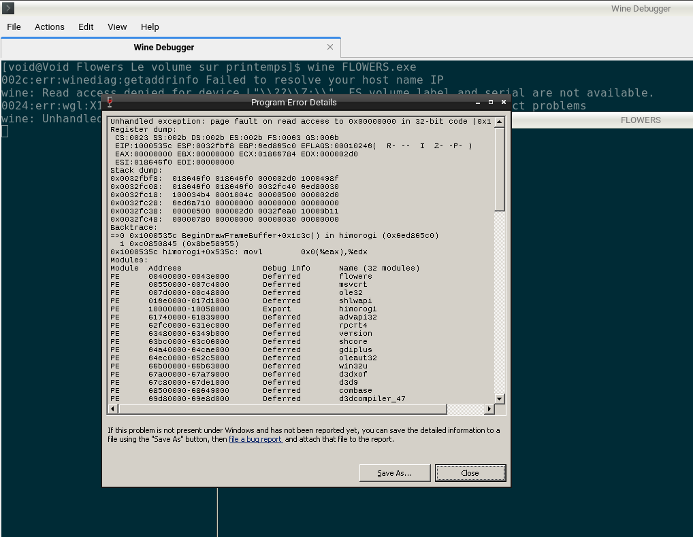
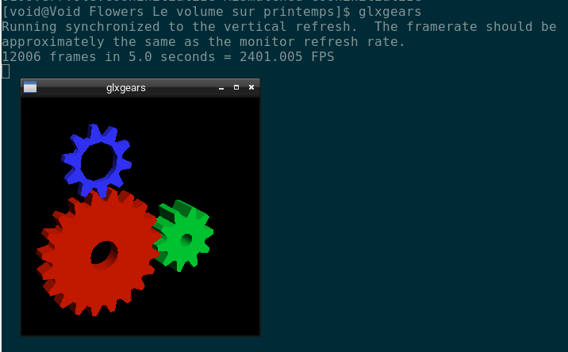
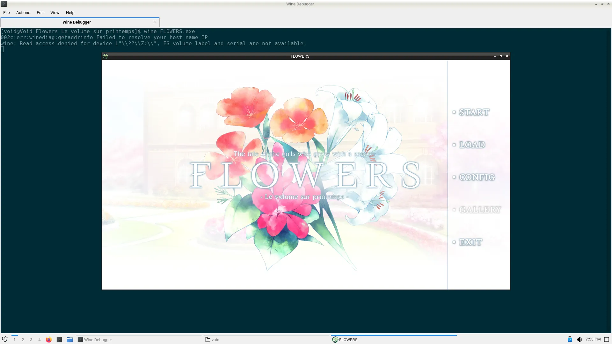
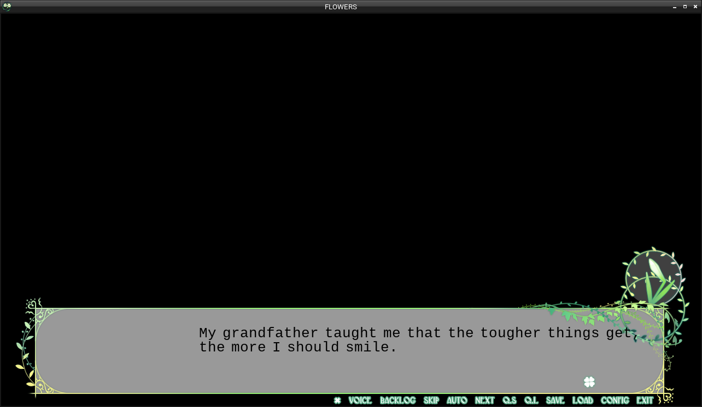

在虚空中与 amitié 相遇。上篇
接下来上演的，是 Void Linux 和 FLOWERS 四季的邂逅。
夏空の光 - 考崎千鳥&八重垣えりか on Soundcloud
序章
noarch 也喜欢百合呢。2021 年某个时候，我在翻看萌娘百科的时候发现了 FLOWERS，本来以为是个番剧...
点开链接，好家伙，是个分成四篇的视觉小说，分别讲述了九个少女在天主教寄宿学校（啊，传统艺能）的百合故事。工作室 Innocent Grey，本业是猎奇解谜游戏，而 FLOWERS 是他们为数不多的全年龄作品之一。
所以问题出现了：noarch 的笔记本绝大多数时间都在运行 Void Linux，为了 FLOWERS 经常重启进 Windows 显然不现实，虚拟机又没有硬件加速，所以一直避而不及的 Wine 现在看上去变得不可避了。
能否借助 Steam 和 Proton 呢？答案是肯定的，但 noarch 不想在笔记本上装 Steam，以及尝试 KISS 的方法把 Wine 配起来听着挺诱人的。
noarch 不在此提供 FLOWERS 资源下载，请自行购买支持正版或去 BT 站及论坛获取 FLOWERS 游戏本体。FLOWERS 前三篇（春，夏，秋）都在 Steam 有售，并且没有 DRM，在 Steam 内安装后可以直接复制到其它电脑上运行。冬篇汉化预计在 2022 年内 Steam 发布，但下面 noarch 会跟你一起体验啃生肉的乐趣！
我们一起来跳进 Void Linux + Wine + Gallium Nine + Textractor + FLOWERS 这个兔子窝吧（是夏篇剧透哦。）
First things first: Wine (multilib)
既然已经在用 Void Linux，安装 Wine 应该已经轻车熟路了吧。# xbps-install wine 就行了吗？好像不是，还有几个额外的注意事项。
首先，FLOWERS 是个 32 位的游戏，需要利用 32 位 Wine 以及配套的 multilib 库来运行。Void 默认不启用 32 位支持，如果你用的是 musl 版则完全没有 multilib，需要用到 glib chroot 等奇技淫巧。noarch 的 Void Linux 是 glibc 风味的，所以只需要安装 void-repo-multilib 包即可。
新添加了源，你多半要改掉镜像：根据 Void Handbook，复制 /usr/share/xbps.d/10-repository-multilib.conf 到 /etc/xbps.d/ 然后编辑。
现在再 # xbps-install -S 然后 xbps-query -Rs wine:
$ xbps-query -Rs wine
[*] libwine-7.7_1 Run Microsoft Windows applications - Runtime library
[-] protontricks-1.8.1_1 Simple wrapper that does winetricks things for Proton enabled games
[*] wine-7.7_1 Run Microsoft Windows applications
[*] wine-common-7.7_1 Run Microsoft Windows applications - common files
[-] wine-devel-7.7_1 Run Microsoft Windows applications - development files
[*] wine-gecko-2.47.2_1 Mozilla Gecko Layout Engine for WINE (32bit)
[*] wine-mono-7.2.0_1 Mono built for running .NET applications with WINE
[-] wine-tools-7.7_1 Run Microsoft Windows applications - development tools
[*] winetricks-20210825_1 Script to install various redistributable runtime libraries in Wine
[*] libwine-32bit-7.7_1 Run Microsoft Windows applications - Runtime library (32bit)
[*] wine-32bit-7.7_1 Run Microsoft Windows applications (32bit)
[-] wine-devel-32bit-7.7_1 Run Microsoft Windows applications - development files (32bit)
多出来的，带 -32bit 后缀的包就是我们想要的。
然后安装 wine wine-32bit winetricks。wine-gecko 和 wine-mono 也可选，但 FLOWERS 用不到。接下来，xbps 会安装大量的依赖，但只要你选对了源，它快得让你坐和放宽的机会都没有。
首次运行
你可能注意到了我们缺点什么。尝试在游戏目录运行 wine FLOWERS.exe，果然，游戏崩溃，Wine 抛出错误：

但是，我们能在终端看到 Wine 给我们的线索：
0024:err:wgl:X11DRV_WineGL_InitOpenglInfo couldn't initialize OpenGL, expect problems
不应该啊！这混成器跑得好好的，怎么就没有 OpenGL 了呢？

$ xbps-query -Rs mesa
...
[*] mesa-21.3.5_1 Graphics library similar to SGI's OpenGL
[-] mesa-XvMC-21.3.5_1 Mesa XvMC drivers
[-] mesa-ati-dri-21.3.5_1 Mesa DRI drivers for ATI GPUs (transitional dummy package)
[*] mesa-demos-8.4.0_3 Mesa 3D demos and tools
[*] mesa-dri-21.3.5_1 Mesa DRI drivers
...
[-] mesa-32bit-21.3.5_1 Graphics library similar to SGI's OpenGL (32bit)
[-] mesa-XvMC-32bit-21.3.5_1 Mesa XvMC drivers (32bit)
[-] mesa-ati-dri-32bit-21.3.5_1 Mesa DRI drivers for ATI GPUs (transitional dummy package) (32bit)
[-] mesa-dri-32bit-21.3.5_1 Mesa DRI drivers (32bit)
...
还记得之前 noarch 说的，这是个 32 位游戏吗？因此，Wine 需要对应的 32 位 Mesa 来运行 OpenGL。
安装 mesa-32bit mesa-dri-32bit，然后再次运行游戏：

游戏启动后，请暂离现实，开始享受少女们甜美的百合世界。
... 吗？
更多故障排除
要命的是，这才是我们 debug 旅途的开始。
字体缺失
首先， 根据 Wine 老传统， 字体缺失是要有的：

不过这也不是 Wine 的锅，是因为游戏用了一个 Windows 都没预装的，叫做 Overlock 的字体，还魔改加入了一些字符。
从这里下载之后放进 WINEPREFIX 里的 C:\windows\Fonts 里就行了。
比如 noarch 用 winetricks 创建了一个 WINEPREFIX 叫 Games，那么我应该先运行 export WINEPREFIX=$HOME/.local/share/wineprefixes/Games，对应的字体目录就是 $WINEPREFIX/drive_c/windows/Fonts。
对于中文版和日文版，字体缺失会直接不显示，这里照例在同一个 WINEPREFIX 下 winetricks cjkfonts 即可。
OP/ED 白屏
序章看完后，游戏可能会白屏，并伴随终端输出：
winegstreamer error: decodebin0: Your GStreamer installation is missing a plug-in.
winegstreamer error: decodebin0: ../gst/playback/gstdecodebin2.c(4701): gst_decode_bin_expose (): /GstBin:bin0/GstDecodeBin:decodebin0:
no suitable plugins found:
Missing decoder: MPEG-1 System Stream (video/mpeg, systemstream=(boolean)true, mpegversion=(int)1)
Ah, proprietary codecs, here we go again.
缺失的这个 MPEG-1 插件在 gst-plugins-bad1 里面，安装它的 32 位版本 gst-plugins-bad1-32bit 即可。
可选：使用 Gallium Nine
虽然这个文字游戏基本上只要有个显卡就能玩，没显卡也能用软件渲染，但如果你想要省点电，或者提升一些性能，Gallium Nine 是一个高性能的 DirectX 9 实现。
与 wined3d 将 DX9 渲染指令转换成 OpenGL 不同，它能直接将 DX9 渲染指令交给任何支持 Gallium 的图形驱动（Mesa，nouveau...），以达到接近原生的性能。
在 WINEPREFIX 里运行 winetricks galliumnine 即可安装 Gallium Nine。
之后，你启动游戏就会看到：
$ wine FLOWERS.exe
Native Direct3D 9 v0.8.0.385-release is active.
For more information visit https://github.com/iXit/wine-nine-standalone
fixme:d3d9nine:DRIPresentGroup_GetMultiheadCount (0x270f78), stub!
fixme:d3d9nine:DRIPresentGroup_GetMultiheadCount (0x270f78), stub!
代表 Gallium Nine 正常运行。
旅途还未结束
noarch 从 2022 年初就有了写这篇文章的想法，并断断续续写了不多。因为其实 noarch 只在 Void 上玩了英文版春篇，一开始并没有测试中文版，续作是在 Windows 上玩的。
写完第一小节之后，一在 Wine 上测试，好家伙，直接黑屏卡死。试了种种方法，也采集了日志，都看不到任何问题的影子。再看了看 Wine bug tracker，面对里面多年未解决，甚至开发者完全不搭理的 bug，再想想 FLOWERS 这个系列的小众程度，直接绝望（这也是为什么我一直不想碰 Wine 的原因之一啊！）
直到某次 Wine 更新（7.5?），noarch 又尝试启动了一下游戏，这次可以了，后续运行看上去也没问题。可能是 Wine 修复其它游戏的过程中受益了吧。